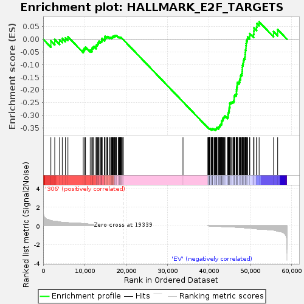
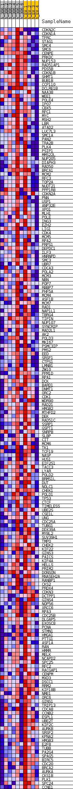
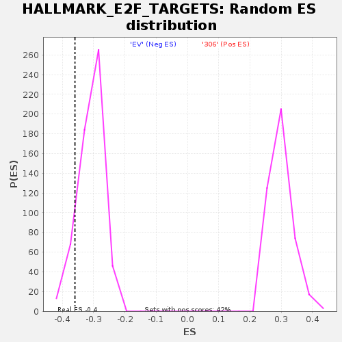

| | | Dataset | 306_EV_express.306_EV.cls#306_versus_EV |
| Phenotype | 306_EV.cls#306_versus_EV |
| Upregulated in class | EV |
| GeneSet | HALLMARK_E2F_TARGETS |
| Enrichment Score (ES) | -0.35956138 |
| Normalized Enrichment Score (NES) | -1.1675689 |
| Nominal p-value | 0.105902776 |
| FDR q-value | 0.4863631 |
| FWER p-Value | 0.981 |
Table: GSEA Results Summary

Fig 1: Enrichment plot: HALLMARK_E2F_TARGETS
Profile of the Running ES Score & Positions of GeneSet Members on the Rank Ordered List
| SYMBOL | TITLE | RANK IN GENE LIST | RANK METRIC SCORE | RUNNING ES | CORE ENRICHMENT | | 1 | CDKN2C | NNN | 1857 | 0.552 | -0.0066 | No |
| 2 | CDKN1A | NNN | 2793 | 0.475 | -0.0010 | No |
| 3 | TFRC | NNN | 3955 | 0.409 | -0.0023 | No |
| 4 | STAG1 | NNN | 4607 | 0.365 | 0.0032 | No |
| 5 | SMC4 | NNN | 5376 | 0.329 | 0.0050 | No |
| 6 | SMC6 | NNN | 5974 | 0.327 | 0.0097 | No |
| 7 | CENPE | NNN | 9670 | 0.236 | -0.0427 | No |
| 8 | PRKDC | NNN | 9903 | 0.226 | -0.0364 | No |
| 9 | NUP153 | NNN | 10209 | 0.215 | -0.0318 | No |
| 10 | RAD51AP1 | NNN | 11346 | 0.181 | -0.0430 | No |
| 11 | PDS5B | NNN | 11749 | 0.168 | -0.0422 | No |
| 12 | CDKN1B | NNN | 11782 | 0.167 | -0.0352 | No |
| 13 | SHMT1 | NNN | 12021 | 0.159 | -0.0320 | No |
| 14 | BUB1B | NNN | 12226 | 0.153 | -0.0286 | No |
| 15 | CCP110 | NNN | 12770 | 0.139 | -0.0315 | No |
| 16 | DCLRE1B | NNN | 12786 | 0.139 | -0.0254 | No |
| 17 | NAA38 | NNN | 12913 | 0.136 | -0.0214 | No |
| 18 | WEE1 | NNN | 13149 | 0.129 | -0.0196 | No |
| 19 | POLE4 | NNN | 13238 | 0.127 | -0.0154 | No |
| 20 | IPO7 | NNN | 13346 | 0.123 | -0.0116 | No |
| 21 | CBX5 | NNN | 13481 | 0.120 | -0.0084 | No |
| 22 | RFC1 | NNN | 13839 | 0.112 | -0.0094 | No |
| 23 | MYC | NNN | 14033 | 0.107 | -0.0079 | No |
| 24 | MSH2 | NNN | 14194 | 0.103 | -0.0059 | No |
| 25 | LBR | NNN | 14199 | 0.103 | -0.0013 | No |
| 26 | ATAD2 | NNN | 14216 | 0.103 | 0.0031 | No |
| 27 | LUC7L3 | NNN | 14806 | 0.090 | -0.0029 | No |
| 28 | SMC1A | NNN | 14844 | 0.089 | 0.0005 | No |
| 29 | PAN2 | NNN | 14869 | 0.088 | 0.0041 | No |
| 30 | TRA2B | NNN | 14872 | 0.088 | 0.0081 | No |
| 31 | PLK4 | NNN | 14934 | 0.087 | 0.0110 | No |
| 32 | PSIP1 | NNN | 15363 | 0.081 | 0.0073 | No |
| 33 | MMS22L | NNN | 15459 | 0.079 | 0.0093 | No |
| 34 | NUP205 | NNN | 15604 | 0.076 | 0.0103 | No |
| 35 | DIAPH3 | NNN | 16022 | 0.066 | 0.0062 | No |
| 36 | RAD50 | NNN | 16147 | 0.064 | 0.0070 | No |
| 37 | BRCA1 | NNN | 16466 | 0.062 | 0.0044 | No |
| 38 | MCM2 | NNN | 16500 | 0.062 | 0.0066 | No |
| 39 | RFC3 | NNN | 16656 | 0.058 | 0.0066 | No |
| 40 | TOP2A | NNN | 16772 | 0.056 | 0.0072 | No |
| 41 | NUDT21 | NNN | 16802 | 0.055 | 0.0092 | No |
| 42 | PPP1R8 | NNN | 16847 | 0.054 | 0.0109 | No |
| 43 | CDKN2A | NNN | 16924 | 0.052 | 0.0119 | No |
| 44 | PNN | NNN | 17160 | 0.047 | 0.0101 | No |
| 45 | USP1 | NNN | 17174 | 0.047 | 0.0120 | No |
| 46 | ANP32E | NNN | 17260 | 0.045 | 0.0125 | No |
| 47 | XPO1 | NNN | 17310 | 0.044 | 0.0137 | No |
| 48 | MLH1 | NNN | 17391 | 0.042 | 0.0142 | No |
| 49 | POLE | NNN | 17582 | 0.039 | 0.0128 | No |
| 50 | ING3 | NNN | 17653 | 0.037 | 0.0133 | No |
| 51 | EZH2 | NNN | 17726 | 0.036 | 0.0137 | No |
| 52 | LIG1 | NNN | 18152 | 0.028 | 0.0077 | No |
| 53 | CDK4 | NNN | 18247 | 0.025 | 0.0072 | No |
| 54 | MCM5 | NNN | 18272 | 0.025 | 0.0079 | No |
| 55 | RPA2 | NNN | 18383 | 0.023 | 0.0071 | No |
| 56 | PRPS1 | NNN | 18406 | 0.022 | 0.0077 | No |
| 57 | DEPDC1 | NNN | 18482 | 0.020 | 0.0074 | No |
| 58 | ILF3 | NNN | 18588 | 0.018 | 0.0064 | No |
| 59 | HNRNPD | NNN | 18615 | 0.018 | 0.0068 | No |
| 60 | SMC3 | NNN | 18669 | 0.016 | 0.0066 | No |
| 61 | UBR7 | NNN | 18691 | 0.016 | 0.0069 | No |
| 62 | CDCA3 | NNN | 18796 | 0.014 | 0.0058 | No |
| 63 | POLA2 | NNN | 18861 | 0.012 | 0.0053 | No |
| 64 | MCM3 | NNN | 18945 | 0.011 | 0.0043 | No |
| 65 | NBN | NNN | 19198 | 0.005 | 0.0003 | No |
| 66 | POP7 | NNN | 19287 | 0.002 | -0.0012 | No |
| 67 | RBBP7 | NNN | 19324 | 0.001 | -0.0017 | No |
| 68 | PHF5A | NNN | 33743 | 0.000 | -0.2476 | No |
| 69 | MCM4 | NNN | 39742 | -0.000 | -0.3499 | No |
| 70 | ASF1B | NNN | 39815 | -0.003 | -0.3510 | No |
| 71 | MCM7 | NNN | 39964 | -0.007 | -0.3532 | No |
| 72 | RAD1 | NNN | 39982 | -0.007 | -0.3532 | No |
| 73 | NAP1L1 | NNN | 40027 | -0.008 | -0.3536 | No |
| 74 | TBRG4 | NNN | 40066 | -0.009 | -0.3538 | No |
| 75 | TIPIN | NNN | 40077 | -0.010 | -0.3535 | No |
| 76 | NUP107 | NNN | 40184 | -0.012 | -0.3548 | No |
| 77 | SYNCRIP | NNN | 40189 | -0.012 | -0.3543 | No |
| 78 | MAD2L1 | NNN | 40194 | -0.012 | -0.3538 | No |
| 79 | AK2 | NNN | 40197 | -0.012 | -0.3533 | No |
| 80 | POLD3 | NNN | 40212 | -0.013 | -0.3529 | No |
| 81 | MKI67 | NNN | 40295 | -0.014 | -0.3537 | No |
| 82 | PSMC3IP | NNN | 40612 | -0.021 | -0.3581 | Yes |
| 83 | PMS2 | NNN | 40650 | -0.022 | -0.3577 | Yes |
| 84 | EED | NNN | 40658 | -0.022 | -0.3568 | Yes |
| 85 | SRSF1 | NNN | 40692 | -0.023 | -0.3563 | Yes |
| 86 | CTPS1 | NNN | 40786 | -0.025 | -0.3568 | Yes |
| 87 | LMNB1 | NNN | 40798 | -0.025 | -0.3558 | Yes |
| 88 | ZW10 | NNN | 40799 | -0.025 | -0.3547 | Yes |
| 89 | PPM1D | NNN | 40806 | -0.025 | -0.3536 | Yes |
| 90 | RPA1 | NNN | 40859 | -0.027 | -0.3533 | Yes |
| 91 | DCK | NNN | 40909 | -0.027 | -0.3529 | Yes |
| 92 | BARD1 | NNN | 41244 | -0.035 | -0.3570 | Yes |
| 93 | DNMT1 | NNN | 41293 | -0.035 | -0.3562 | Yes |
| 94 | ORC2 | NNN | 41462 | -0.038 | -0.3573 | Yes |
| 95 | CDK1 | NNN | 41593 | -0.041 | -0.3577 | Yes |
| 96 | WDR90 | NNN | 41675 | -0.043 | -0.3571 | Yes |
| 97 | RAD21 | NNN | 41713 | -0.044 | -0.3558 | Yes |
| 98 | HMGB2 | NNN | 41775 | -0.045 | -0.3547 | Yes |
| 99 | MTHFD2 | NNN | 41812 | -0.046 | -0.3533 | Yes |
| 100 | DEK | NNN | 41897 | -0.048 | -0.3525 | Yes |
| 101 | RAD51C | NNN | 41917 | -0.048 | -0.3506 | Yes |
| 102 | SSRP1 | NNN | 41948 | -0.049 | -0.3489 | Yes |
| 103 | GSPT1 | NNN | 42330 | -0.057 | -0.3529 | Yes |
| 104 | SNRPB | NNN | 42345 | -0.057 | -0.3505 | Yes |
| 105 | SLBP | NNN | 42375 | -0.058 | -0.3484 | Yes |
| 106 | CIT | NNN | 42495 | -0.060 | -0.3477 | Yes |
| 107 | MCM6 | NNN | 42524 | -0.061 | -0.3454 | Yes |
| 108 | TK1 | NNN | 42558 | -0.062 | -0.3432 | Yes |
| 109 | TCF19 | NNN | 42693 | -0.065 | -0.3425 | Yes |
| 110 | NASP | NNN | 42712 | -0.065 | -0.3399 | Yes |
| 111 | HUS1 | NNN | 42771 | -0.066 | -0.3379 | Yes |
| 112 | EIF2S1 | NNN | 42876 | -0.069 | -0.3365 | Yes |
| 113 | TACC3 | NNN | 43035 | -0.072 | -0.3360 | Yes |
| 114 | LYAR | NNN | 43044 | -0.072 | -0.3328 | Yes |
| 115 | POLD2 | NNN | 43055 | -0.072 | -0.3297 | Yes |
| 116 | BRMS1L | NNN | 43110 | -0.073 | -0.3273 | Yes |
| 117 | DUT | NNN | 43122 | -0.074 | -0.3241 | Yes |
| 118 | NOLC1 | NNN | 43140 | -0.074 | -0.3211 | Yes |
| 119 | CHEK1 | NNN | 43284 | -0.077 | -0.3200 | Yes |
| 120 | POLD1 | NNN | 43359 | -0.079 | -0.3177 | Yes |
| 121 | TP53 | NNN | 43421 | -0.081 | -0.3150 | Yes |
| 122 | CTCF | NNN | 43429 | -0.081 | -0.3115 | Yes |
| 123 | TIMELESS | NNN | 43535 | -0.084 | -0.3095 | Yes |
| 124 | UBE2S | NNN | 43667 | -0.086 | -0.3078 | Yes |
| 125 | CSE1L | NNN | 43830 | -0.090 | -0.3064 | Yes |
| 126 | UNG | NNN | 43880 | -0.091 | -0.3031 | Yes |
| 127 | CDC25A | NNN | 44501 | -0.093 | -0.3095 | Yes |
| 128 | TUBG1 | NNN | 44590 | -0.095 | -0.3067 | Yes |
| 129 | DDX39A | NNN | 44621 | -0.096 | -0.3029 | Yes |
| 130 | MYBL2 | NNN | 44624 | -0.096 | -0.2986 | Yes |
| 131 | SUV39H1 | NNN | 44670 | -0.097 | -0.2949 | Yes |
| 132 | TMPO | NNN | 44696 | -0.098 | -0.2909 | Yes |
| 133 | CHEK2 | NNN | 44765 | -0.099 | -0.2876 | Yes |
| 134 | KIF22 | NNN | 44803 | -0.100 | -0.2837 | Yes |
| 135 | GINS3 | NNN | 44879 | -0.102 | -0.2803 | Yes |
| 136 | PAICS | NNN | 44881 | -0.102 | -0.2757 | Yes |
| 137 | KIF4A | NNN | 44897 | -0.103 | -0.2713 | Yes |
| 138 | HELLS | NNN | 45008 | -0.105 | -0.2684 | Yes |
| 139 | PRIM2 | NNN | 45032 | -0.106 | -0.2640 | Yes |
| 140 | DONSON | NNN | 45040 | -0.106 | -0.2593 | Yes |
| 141 | RNASEH2A | NNN | 45047 | -0.106 | -0.2546 | Yes |
| 142 | RANBP1 | NNN | 45131 | -0.107 | -0.2512 | Yes |
| 143 | CKS2 | NNN | 45340 | -0.110 | -0.2497 | Yes |
| 144 | PRDX4 | NNN | 45574 | -0.116 | -0.2484 | Yes |
| 145 | CDKN3 | NNN | 45816 | -0.121 | -0.2470 | Yes |
| 146 | DCTPP1 | NNN | 46007 | -0.126 | -0.2446 | Yes |
| 147 | GINS4 | NNN | 46065 | -0.127 | -0.2398 | Yes |
| 148 | NOP56 | NNN | 46093 | -0.128 | -0.2344 | Yes |
| 149 | XRCC6 | NNN | 46094 | -0.128 | -0.2286 | Yes |
| 150 | RPA3 | NNN | 46137 | -0.129 | -0.2235 | Yes |
| 151 | CDC25B | NNN | 46290 | -0.134 | -0.2200 | Yes |
| 152 | DLGAP5 | NNN | 46600 | -0.142 | -0.2188 | Yes |
| 153 | EXOSC8 | NNN | 46646 | -0.143 | -0.2131 | Yes |
| 154 | PCNA | NNN | 46657 | -0.144 | -0.2068 | Yes |
| 155 | STMN1 | NNN | 46662 | -0.144 | -0.2003 | Yes |
| 156 | HMGA1 | NNN | 46707 | -0.145 | -0.1945 | Yes |
| 157 | PTTG1 | NNN | 46731 | -0.145 | -0.1883 | Yes |
| 158 | ASF1A | NNN | 46826 | -0.148 | -0.1832 | Yes |
| 159 | RAN | NNN | 46835 | -0.149 | -0.1766 | Yes |
| 160 | HMMR | NNN | 46886 | -0.150 | -0.1706 | Yes |
| 161 | MELK | NNN | 47276 | -0.160 | -0.1700 | Yes |
| 162 | NCAPD2 | NNN | 47401 | -0.164 | -0.1647 | Yes |
| 163 | SPC25 | NNN | 47443 | -0.165 | -0.1579 | Yes |
| 164 | RFC2 | NNN | 47627 | -0.170 | -0.1533 | Yes |
| 165 | RACGAP1 | NNN | 47632 | -0.170 | -0.1457 | Yes |
| 166 | CENPM | NNN | 47776 | -0.176 | -0.1402 | Yes |
| 167 | MXD3 | NNN | 47975 | -0.180 | -0.1354 | Yes |
| 168 | DSCC1 | NNN | 48021 | -0.182 | -0.1279 | Yes |
| 169 | RRM2 | NNN | 48062 | -0.183 | -0.1202 | Yes |
| 170 | KIF18B | NNN | 48071 | -0.184 | -0.1120 | Yes |
| 171 | NME1 | NNN | 48087 | -0.185 | -0.1039 | Yes |
| 172 | ORC6 | NNN | 48225 | -0.188 | -0.0977 | Yes |
| 173 | GINS1 | NNN | 48300 | -0.191 | -0.0903 | Yes |
| 174 | TRIP13 | NNN | 48388 | -0.196 | -0.0829 | Yes |
| 175 | CDCA8 | NNN | 48507 | -0.199 | -0.0758 | Yes |
| 176 | CCNB2 | NNN | 48711 | -0.207 | -0.0699 | Yes |
| 177 | ESPL1 | NNN | 48739 | -0.208 | -0.0609 | Yes |
| 178 | UBE2T | NNN | 48769 | -0.209 | -0.0519 | Yes |
| 179 | KIF2C | NNN | 48811 | -0.211 | -0.0431 | Yes |
| 180 | AURKB | NNN | 48940 | -0.217 | -0.0354 | Yes |
| 181 | SRSF2 | NNN | 48942 | -0.217 | -0.0255 | Yes |
| 182 | KPNA2 | NNN | 49007 | -0.220 | -0.0166 | Yes |
| 183 | HMGB3 | NNN | 49047 | -0.222 | -0.0072 | Yes |
| 184 | E2F8 | NNN | 49238 | -0.230 | -0.0000 | Yes |
| 185 | TUBB | NNN | 49336 | -0.234 | 0.0089 | Yes |
| 186 | PA2G4 | NNN | 49836 | -0.243 | 0.0114 | Yes |
| 187 | SPAG5 | NNN | 49857 | -0.244 | 0.0222 | Yes |
| 188 | BIRC5 | NNN | 50785 | -0.287 | 0.0194 | Yes |
| 189 | CDC20 | NNN | 50843 | -0.291 | 0.0316 | Yes |
| 190 | BRCA2 | NNN | 50872 | -0.292 | 0.0444 | Yes |
| 191 | AURKA | NNN | 51510 | -0.322 | 0.0482 | Yes |
| 192 | CKS1B | NNN | 51579 | -0.326 | 0.0618 | Yes |
| 193 | PLK1 | NNN | 52116 | -0.349 | 0.0685 | Yes |
| 194 | SPC24 | NNN | 55593 | -0.455 | 0.0299 | Yes |
| 195 | CCNE1 | NNN | 56589 | -0.557 | 0.0382 | Yes |
Table: GSEA details [plain text format]

Fig 2: HALLMARK_E2F_TARGETS
Blue-Pink O' Gram in the Space of the Analyzed GeneSet

Fig 3: HALLMARK_E2F_TARGETS: Random ES distribution
Gene set null distribution of ES for HALLMARK_E2F_TARGETS